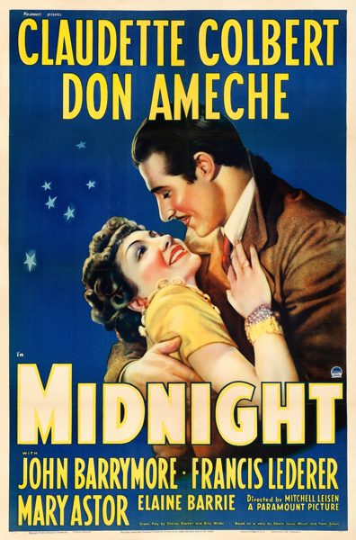

Midnight

Starring: Claudette Colbert, Don Ameche, John Barrymore
Director: Mitchell Leisen
Writer: Charles Brackett, Billy Wilder
Producer: Arthur Hornblow, Jr.
Midnight is a 1939 American screwball comedy film directed by Mitchell Leisen and starring Claudette Colbert, Don Ameche, John Barrymore, Francis Lederer, Mary Astor, and Elaine Barrie.
Trivia
- According to a Turner Classic Movies introduction by Robert Osborne, Wilder was unhappy with script changes made by director Leisen, giving him motivation to become a director himself so he would have more creative control.
- The role that eventually went to Claudette Colbert was originally offered to Carole Lombard, who turned it down because she felt it was too similar to films she had already made.
- Barbara Stanwyck was then offered the role but scheduling problems prevented her from taking it.
Previous Showings
15 Runs • 10 Festivals
Original Billings: 1 run (April 9, 1939)
Original Run: April 9, 1939 (Sunday - Tuesday)
All runs on record (15):
- April 9, 1939 (Sunday - Tuesday)Claudette Colbert, Don Ameche
- December 30 - 31, 1989w/ Ninotchka
- March 4 - 8, 1994w/ The Major and the Minor
- August 20 - 21, 1998Dear Old Hollywoodw/ One Hour with You
- November 13 - 16, 1999Favorites: Fall 1999 Seriesw/ The Miracle of Morgan's Creek
- August 8 - 11, 2002Summer 2002: Billy Wilder Remembered and Cary Grant, Part 3w/ Love in the Afternoon
- August 17 - 20, 2002w/ Love in the Afternoon
- September 24 - 27, 2005Summer 2005w/ To Be or Not to Be
- July 28 - 31, 2007Summer 2007, including Films Starring Fred Astairew/ Swing Time
- July 31 - August 3, 2009Summer 2009w/ Roman Holiday
- October 25 - 26, 200920th Anniversary Festivalw/ It Happened One Night
- January 14 - 19, 2012w/ The Philadelphia Story
- July 9 - 12, 2016Summer 2016w/ Roman Holiday
- November 9 - 10, 201980 Years Ago in This Theatre: The Films of 1939w/ Love Affair
- August 21 - 22, 2025Summer 2025w/ The Palm Beach Story